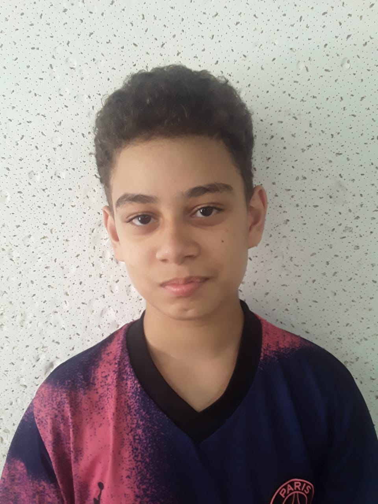
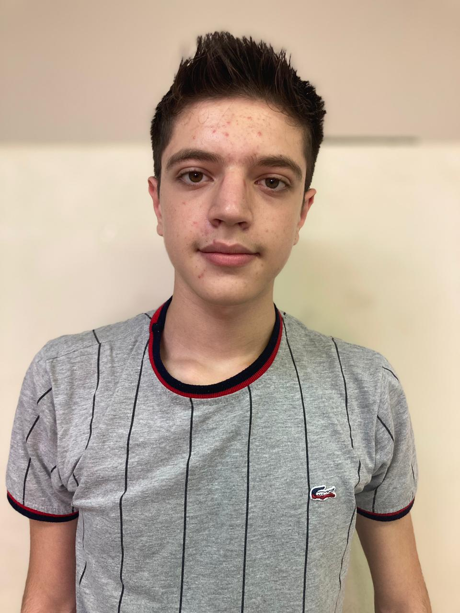

Somos alunos do Instituto Federal Campûs Hortolandia e criamos o site para propagar a causa ambiental que vem sendo esquecida por adultos e jovens da nossa idade, o meio-ambiente precisa ser protegido, e você pode o estar agredindo-o agora mesmo
Criadores


Nossa sede
Estamos localizados no Instituto Federal Campûs Hortolandia